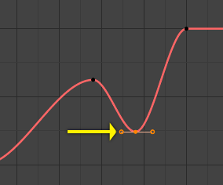

Giới Thiệu -- Introduction¶
After animating some property in Blender using keyframes you can edit their corresponding curves. When something is "animated", it changes over time. This curve is shown as something called an F-curve. Basically what an F-curve does is an interpolation between two animated properties. In Blender, animating an object means changing one of its properties, such as the object's location, or its scale.
As mentioned, Blender's fundamental unit of time is the "frame", which usually lasts just a fraction of a second, depending on the frame rate of the scene. As animation is composed of incremental changes spanning multiple frames, usually these properties are not manually modified frame-by-frame, because:
It would take ages!
It would be very difficult to get smooth variations of the property (unless you compute mathematical functions and type a precise value for each frame, which would be crazy).
This is why nearly all direct animation is done using interpolation.
The idea is simple: you define a few Keyframes, which are multiple frames apart. Between these keyframes, the properties' values are computed (interpolated) by Blender and filled in. Thus, the animators' workload is significantly reduced.

Example of an interpolation.¶
For example, if you have:
A control point of value 0 at frame 0,
another one of value 10 at frame 25,
and you use linear interpolation, then, at frame 5 we get a value of 2.
The same goes for all intermediate frames: with just two points, you get a smooth increase from (0 to 10) along the 25 frames. Obviously, if you would like the frame 15 to have a value of 9, you would have to add another control point (or keyframe)...
Chiều Hướng của Thời Gian -- Direction of Time¶
Although F-curves are very similar to Bézier, there are some important differences.
For obvious reasons, a property represented by a curve cannot have more than one value at a given time, hence:
When you move a control point ahead of a control point that was previously ahead of the point that you are moving, the two control points switch their order in the edited curve, to avoid that the curve goes back in time.
For the above reason, it is impossible to have a closed F-curve.

Trước khi di chuyển khung khóa thứ hai.¶ |

Sau khi di chuyển khung khóa thứ hai.¶ |
Sắp Đặt -- Settings¶
Đường cong có 3 tính chất bổ sung điều khiển quá trình nội suy giữa các điểm, hành xử của sự nới rộng và thể loại của các tay cầm.
Chế Độ Nội Suy -- Interpolation Mode¶
Tham Chiếu -- Reference
- Trình Đơn -- Menu
- Phím Tắt -- Hotkey
T
Mode for the Interpolation between the current and next keyframe.
Nội Suy -- Interpolation¶
- Đồng Đều -- Constant
There is no interpolation at all. The curve holds the value of its last keyframe, giving a discrete (stairway) "curve". Usually only used during the initial "blocking" stage in pose-to-pose animation workflows.
- Tuyến Tính -- Linear
This simple interpolation creates a straight segment, giving a non-continuous line. It can be useful when using only two keyframes and the Extrapolation extend mode, to easily get an infinite straight line (i.e. a linear curve).

Linear.¶
- Đường Cong Bézier -- Bézier
The more powerful and useful interpolation, and the default one. It gives nicely smoothed curves, i.e. smooth animations!

Bézier.¶
{kind=link}
Ghi chú
Remember that some F-curves can only take discrete values, in which case they are always shown as if constant interpolated, whatever option you chose.
Nới Lỏng (theo mức độ) -- Easing (by strength)¶
Different methods of easing interpolations for F-curve segment. The "Robert Penner easing equations" (basically, equations which define some preset ways that one keyframe transitions to another) which reduce the amount of manual work (inserting and tweaking keyframes) to achieve certain common effects. For example, snappy movements.
Tuyến Tính -- Linear
Sin -- Sinusoidal
Bậc Hai -- Quadratic
Lập Phương -- Cubic
Bậc Bốn -- Quartic
Bậc Năm -- Quintic
Lũy Thừa -- Exponential
Vòng Tròn -- Circular
Xem thêm
For more info and a few live demos, see http://easings.net and http://www.robertpenner.com/easing/
Hiệu Ứng Năng Động -- Dynamic Effects¶
These additional easing types imitate (fake) physics-based effects like bouncing/springing effects. The corresponding settings can be found in the .
- Đàn Hồi -- Elastic
Exponentially decaying sine wave, like an elastic band. This is like bending a stiff pole stuck to some surface, and watching it rebound and settle back to its original state.
- Biên Độ -- Amplitude
The amplitude property controls how strongly the oscillation diverges from the basic curve. At 0.0, there is no oscillation (i.e. it just snaps to the B-value like an extreme exponential transition), and at 1.0 a profile similar to the one shown in the icon occurs.
- Chu Kỳ -- Period
The period property controls the frequency with which oscillations occur. Higher values result in denser oscillations.
- Nẩy -- Bounce
Exponentially decaying parabolic bounce, like when objects collide. e.g. for Bouncing balls, etc.
- Sau/Lưng/Quay Lại -- Back
Cubic easing with overshoot and settle. Use this one when you want a bit of an overshoot coming into the next keyframe, or perhaps for some wind-up anticipation.
- Sau/Lưng/Quay Lại -- Back
The back property controls the size and direction (i.e. above/below the curve) of the overshoot.
Thể Loại Chậm Rãi -- Easing Type¶
Tham Chiếu -- Reference
- Trình Đơn -- Menu
- Phím Tắt -- Hotkey
Ctrl-E
The Easing Type controls which end of the segment between the two keyframes that the easing effects apply to.
- Tự Động Chậm Rãi -- Automatic Easing
The most commonly expected of the below behaviors is used. For the transitional effects, this is basically ease in, while for the physics effects it is ease out.
- Nới Vào -- Ease In
Effect builds up to the second keyframe.
- Nới Ra -- Ease Out
Hiệu ứng mờ dần ra khỏi khung khóa đầu tiên
- Nới Vào và Ra -- Ease In Out
Ảnh hưởng xảy ra ở hai đầu của phân đoạn.
Ngoại Suy -- Extrapolation¶
Tham Chiếu -- Reference
- Trình Đơn -- Menu
- Phím Tắt -- Hotkey
Shift-E
Extrapolation defines the behavior of a curve before the first and after the last keyframes.
There are two basic extrapolation modes:
- Đồng Đều -- Constant
The default one, curves before their first keyframe and after their last one have a constant value (the one of these first and last keyframes).

Constant extrapolation.¶
- Tuyến Tính -- Linear
Curves ends are straight lines (linear), as defined by the slope of their first and last keyframes.

Linear extrapolation.¶
Additional extrapolation methods (e.g. the Cycles modifier) are located in the F-Curve Modifiers.
Loại Tay Cầm -- Handle Types¶
Tham Chiếu -- Reference
- Trình Đơn -- Menu
- Phím Tắt -- Hotkey
V
When using Bézier-interpolated curves it is possible to control the slope of the curve at the control points. This is done via the curve point handles; you can set the type of handle to use for the curve points by pressing V or choosing Key, Handle Type in the Graph editor menu. Each curve point can have a different handle type, even within the same curve.
There are three automatic modes, Automatic, Auto Clamped, and Vector, where Blender automatically determines the curve's slope at each control point. The neighboring control points have the most influence of the slope, and points further away have a smaller influence. This can be controlled per F-curve with the Auto Handle Smoothing properties.
By using the other, non-automatic modes, you have full manual control over the slope.
- Tự Động -- Automatic
Handle positions are automatically chosen to produce smooth curves.

Auto handles.¶
- Tự Động Hạn Định -- Auto Clamped
Automatic handles clamped to prevent overshoots and changes in the curve direction between keyframes (S-shapes).

Auto clamped handles.¶
- Vectơ -- Vector
Creates automatic linear interpolation between keyframes. The segments remain linear when keyframe centers are moved. However, when the handles are moved, the handle type switches to Free.

Vector handles.¶
- Thẳng Hàng -- Aligned
The two handles of the curve point are locked together to always point in exactly opposite directions. This results in a curve that is always smooth at the control point.

Aligned handles.¶
- Tự Do -- Free
The handles can be moved completely independently, and thus can result in a sharp change of direction.

Free handles.¶